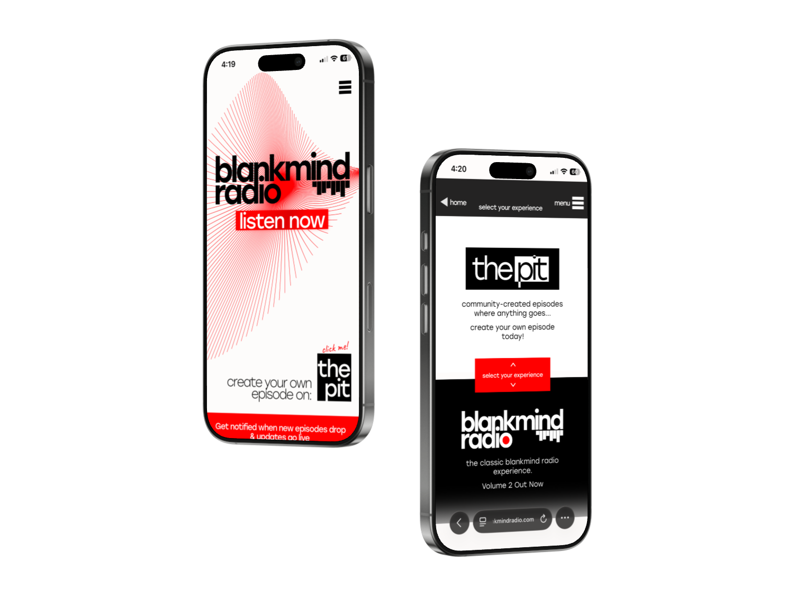
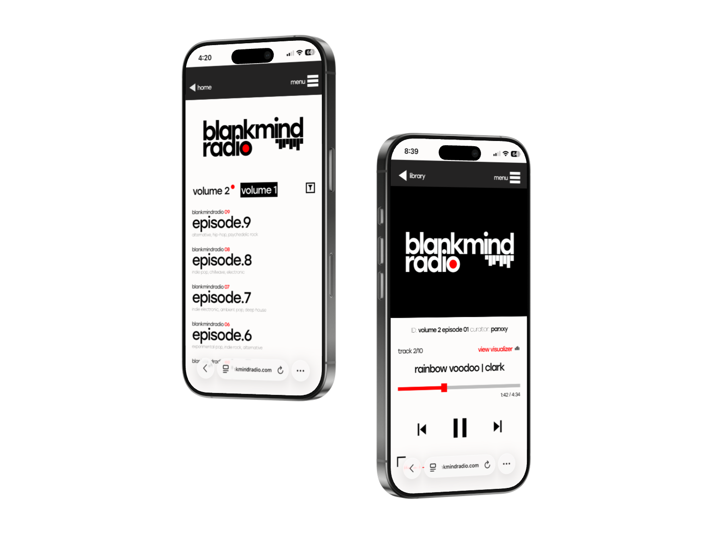

blankmind radio
A human-curated music discovery platform built to share the soundtracks of life's chapters.
1,200 views · 42 subscribers · $0 marketing · 3 weeks


Overview
Blankmind Radio is a music discovery service I created in 2024 and continue to run today. It started from a
simple desire: I wanted a more intentional, more personal way to share the music I love.
To me, music is the soundtrack to whatever chapter of life you're in — and as that chapter changes, so does
the soundtrack. I wanted a space that honored that, something more meaningful than a Spotify playlist.
What began as a solo passion project has grown into a platform with community-created content, a subscriber
base, and thousands of site visits — all without spending a dollar on marketing.
Role & Scope
Solo project. I handled everything from:
brand identity, visual design, web development, content strategy, marketing, analytics, and community
management.
The problem
Music discovery today is dominated by algorithms. Platforms like Spotify and Apple Music serve you
recommendations based on listening patterns, but the result often feels impersonal — optimized for engagement,
not connection. I wanted to create the opposite: a place where real people share what they're actually listening
to, with context and care. Something you choose to interact with, not something pushed at you by a
recommendation engine.
Version 1: The Foundation (2024)
Design & Build
I started by designing the initial brand and interface in Figma, then built the site on Wix. The biggest early
challenges were nailing down a cohesive brand language, getting music streaming to work seamlessly within Wix's
limitations, making the experience mobile-responsive, and avoiding paid plans for storage and hosting.
The first
version featured curated episodes — roughly 30-minute playlists of my favorite music at the time, released every
other week. Each episode captured a specific moment in time, a snapshot of what I was listening to during that
chapter. I posted 9 episodes across the initial run. The site also included a shop for custom-made CDs of each
volume, a suggestion form, and a guest book that served as a community bulletin board.
Marketing
I designed and printed QR code flyers and placed them across a few college campuses. The approach was
intentionally non-intrusive — I put them in spots people would discover if they were curious, rather than
plastering them in high-traffic areas. I wanted Blankmind Radio to be something people chose to find, not
something shouted at them.
Results
In the first 3 months, Version 1 logged 800 site sessions from 343 unique visitors. What started as a local
campus project showed up in analytics across the country through word of mouth. I grew a subscriber base of 25
people signed up for new episode notifications. The entire project was run on a zero-dollar marketing budget —
just printed flyers and personal outreach.
Version 2: The Reimagining (2026)
Why Rebuild?
After running Version 1, I stepped away to grow as a designer. When I came back to
the project in 2026, I wanted to reimagine it from the ground up. I had three goals: own the platform completely
(no web builders, no monthly fees), open it up to the community, and bring the brand to a level that matched my
growth as a designer.
New Brand Identity
I designed a new logo, established a defined brand guide with specific colors and typography, and created a
visual system that's clean, accessible, and cohesive. The first version reflected where I was at the time — the
new version reflects where I am now.
Hand-Built Tech Stack
I rebuilt the entire site from scratch using HTML, CSS, and JavaScript, hosted on Firebase with a custom
domain (blankmindradio.com). The stack I assembled gives me full ownership with no recurring platform fees:
- Cloudflare R2 for music file storage and direct streaming through a custom media player
- OpenForm + Firestore for form handling
- TextBee with a burner phone for bulk SMS notifications to subscribers
- Google Analytics for tracking and insights
- Firebase for hosting
The Pit: Community-Created Episodes
The biggest addition in Version 2 is The Pit — a section where anyone can create and submit their own episode.
Users fill out a form with a playlist link, their curator name, and a description. Submissions come into a
custom-built dashboard I made, where I source the audio files, host them in cloud storage, and publish the
episode to the site.
I initially
launched The Pit with a leaderboard that ranked episodes by likes, but I quickly realized that created the wrong
dynamic. I wanted The Pit to be a place for sharing, not competing. I replaced the leaderboard with a simple
chronological feed, and the vibe shifted immediately. The site also hosts music from a couple of local
musicians, further rooting Blankmind Radio in real community.
Marketing V2
For the relaunch, I designed 6 different types of QR code flyers, stickers, and posters and deployed them
across campus. I also ran context-specific guerrilla campaigns — for a college casino night, I put up signs in
the bathrooms that read "Scan for +200 luck" with a link to the site. That single activation drove roughly 60
new users in a few hours. Again, zero marketing budget. Just design, printing, and hustle.
Results
In the first 3 weeks, Version 2 reached 1,200 views from 239 new users — putting it on pace for roughly 4x the
visitor rate of Version 1. The subscriber base grew from 25 to 42, a 68% increase. The community features drove
a meaningful portion of this growth, alongside the improved marketing. The site is fully mobile-responsive, and
the only costs have been printing and the domain name.
Key Design Decision
Non-intrusive marketing. I never wanted Blankmind Radio to feel like spam. The QR code placements were
designed to reward curiosity, not demand attention. This philosophy shaped the entire brand voice.
Removing the leaderboard. Ranking community episodes by likes was creating competition where I wanted
collaboration. Switching to chronological ordering was a small change with a big impact on the culture of the
platform.
Owning the stack. Moving off Wix to a hand-built site wasn't just a technical decision — it was a design
decision. Full control meant I could build a custom media player, handle streaming exactly how I wanted, and
never be limited by a platform's templates or pricing.
Opening it up. Version 1 was personal. Version 2 made space for other people. That shift from "my radio
station" to "our radio station" is what gave the project real life.
Reflection
Blankmind Radio is the project I'm most proud of. It started as a way to share music I love, and it's grown
into a platform that other people use to share what they love too. It taught me how to build and maintain a
product end-to-end: brand strategy, visual design, frontend development, infrastructure, analytics, community
management, and grassroots marketing.
Every skill I used on this project, I either already had or taught myself along the way.
The project is ongoing. I'm continuing to release episodes, grow the community, and refine the platform.
What's next is figuring out how to scale the community features and make the submission-to-publish pipeline
faster without losing the personal touch that makes it work.